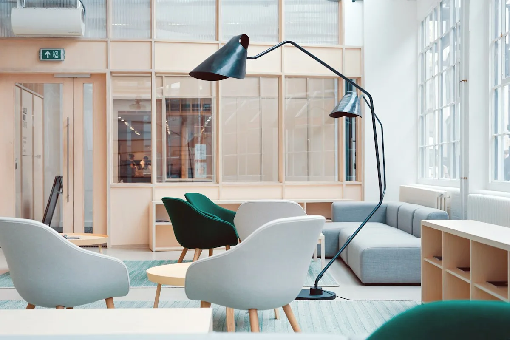
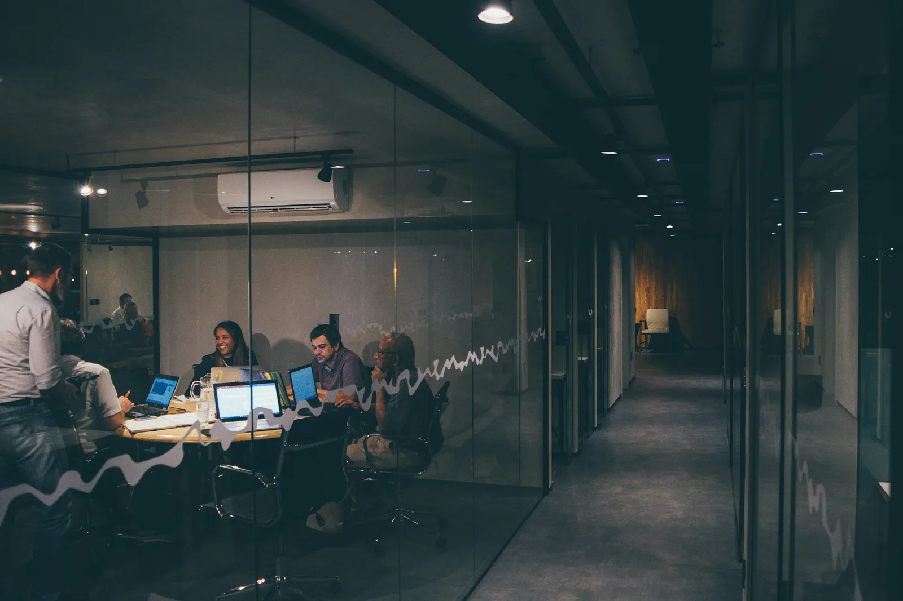
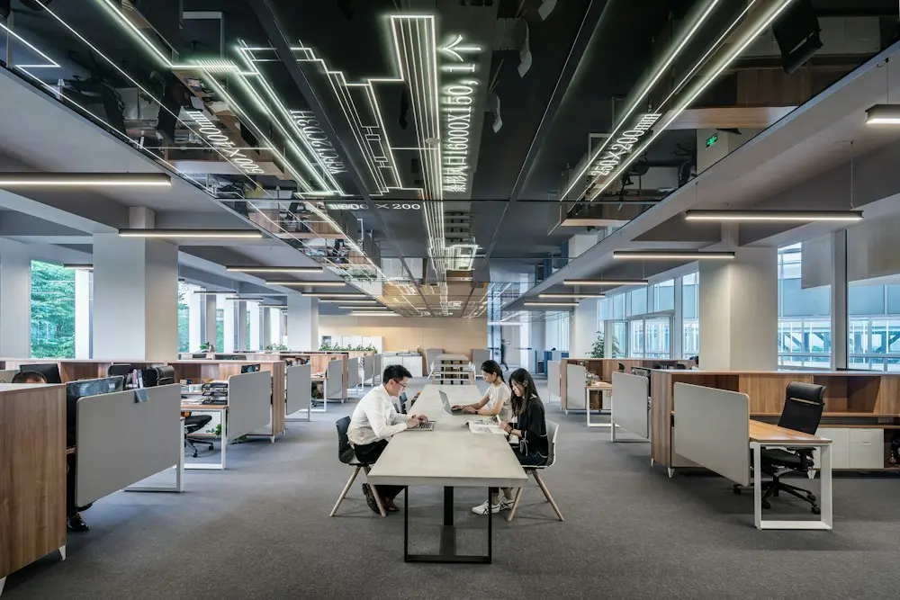

Clarity is a feature
If a person has to reconstruct the situation before they can act on it, the software has already failed. Legibility is design work, not documentation.

Stackly exists for the moment between sensing that something matters and knowing what to do about it. We design the space in between.
We started Stackly because the tools meant to organise work had become another thing to manage. Context lived in five places, decisions lived in someone's memory, and the actual work lived somewhere else entirely.
So we build the opposite: a single, considered surface where the work, the reasoning behind it, and the people responsible for it stay connected.
If a person has to reconstruct the situation before they can act on it, the software has already failed. Legibility is design work, not documentation.
More information rarely produces better judgement. The right information, at the right moment, in the right shape, does.
The best product surface is the one people stop noticing. We remove ceremony so attention can go back to the problem.
Automation should carry the repetitive parts of work, never the judgement. Every automated flow remains visible, adjustable, and reversible.

Every Stackly release starts with the operating model — who owns what, what moves where, and what a person needs to see at each step. The interface is the last thing we design, because it is the thing people judge first.
We resist simplifying a process until it no longer matches reality. A workflow that looks tidy but behaves nothing like the team is worse than no workflow at all.
First-run delight is easy. We optimise for the Tuesday afternoon six weeks in, when the novelty is gone and the work still has to move.
When something is automated, connected, or inferred, the product says so plainly. Trust comes from being able to see how a conclusion was reached.
We prefer fewer, finished capabilities over a wide surface of half-built ones. A feature is done when a team can rely on it without a workaround.
A workspace is judged in aggregate — in the spacing, the defaults, the wording of an empty state, the weight of a divider. None of it is decoration; all of it decides whether people trust what they are looking at.
They are not values on a wall. They are the reason certain features exist and others never get built.
We watch real teams run real work before we design anything. The gap between the documented process and the actual one is where the product lives.

Most problems are solved by removing a step, a field, or a meeting — not by adding a feature. We try subtraction first, every time.
Nothing ships on our judgement alone. Work is reviewed with the teams it is meant to serve, in their language, on their terms.

Stackly is built by a distributed team that works the way our software is designed to be used — asynchronously, with context written down, and with decisions attached to the work they affect.
Teams that feel rushed build software that feels rushed. We protect the conditions that make careful work possible.




We would rather make a smaller surface genuinely dependable than a wide one that is merely available. That shapes what we are building toward.
Carrying more of the reasoning behind a decision into the place where the work happens.
Flows that are easier to read, easier to pause, and easier to explain to someone else.
Shortening the distance between opening Stackly and understanding what needs attention.
Keyboard, contrast, motion, and language treated as part of the build, not a later pass.
Perspectives on product thinking, operational clarity, and the human side of building software for teams.

Capability gets the attention. Comprehension is what actually changes what a team does next.
Read perspective
Fragmentation charges a tax on attention long before it appears anywhere in a report.
Read perspective
Adoption is usually a design problem long before it becomes a training problem.
Read perspectiveTell us where the friction is. We will show you what a clearer operating layer could look like for the way you already operate.